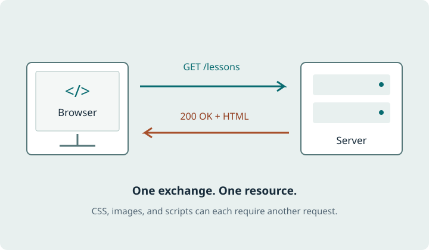

IT 3203 / Research project
Understanding HTTP
Explore how browsers and servers communicate, what an HTTP message contains, and why newer protocol versions change the way the web delivers content.
Behind every page load
Hypertext Transfer Protocol (HTTP) provides rules for requesting resources and returning results. A browser uses it to retrieve HTML, images, stylesheets, and data.
This guide follows a request from a URL to a response, then compares the protocol versions that carry those messages. The central idea stays recognizable: a client asks, and a server answers.
Start with how HTTP works →
Key terms at a glance
- Client and server
- URL
- Method
- Status code
- Header
- Cache
- HTTPS
Find explanations and examples on the key concepts page.
Explore the guide
- How HTTP works
Follow a page load and read requests, responses, methods, and status codes.
- HTTP evolution
Compare persistent connections, multiplexing, and QUIC streams.
- Key concepts
Learn seven foundational ideas through concrete examples.
- References and resources
Explore the standards and learning materials behind this guide.
- About the author and project
Read about the student behind the research and the course project.